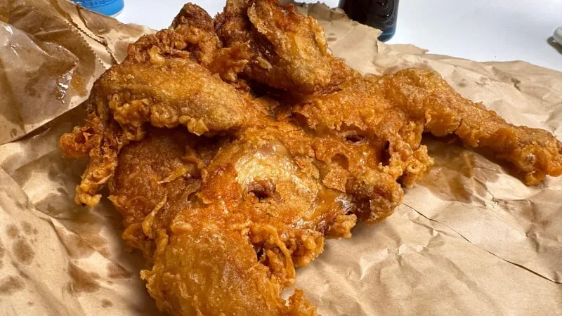
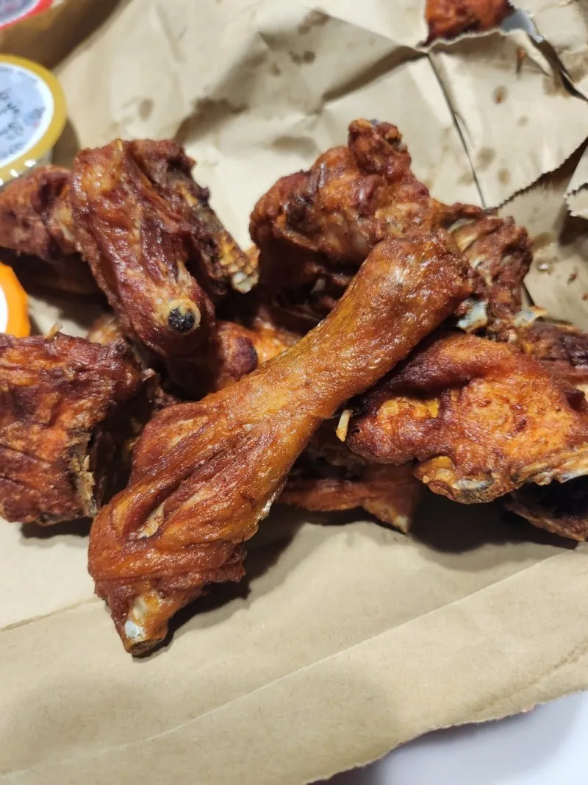
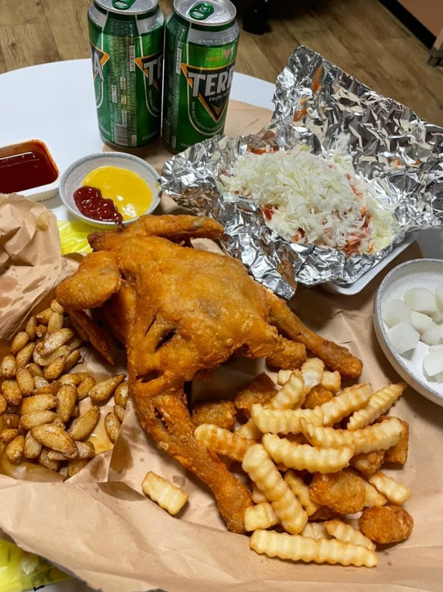
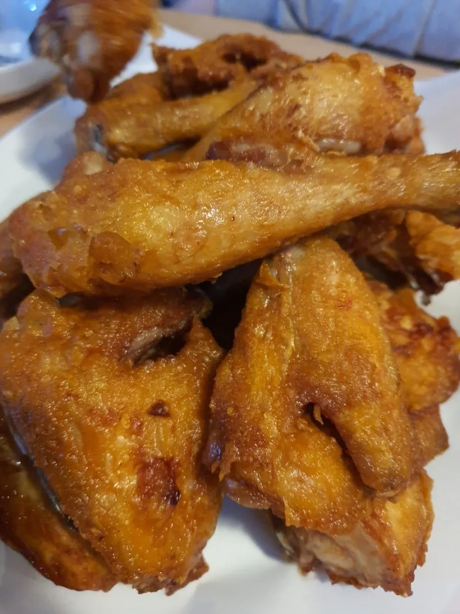

내일부터 휴일인 개붕이를 위해?
아빠... 디핑소스는? 요즘 누가 디핑 소스도 없이 뻑뻑하게 옛날 통닭 뜯어? 아오 안먹어!
요즘 치킨값생각하면 저게 존나 맛있는거임...
맛잘알
책임져 나 흥분되
2번은 좀 딱딱할 거 같고 나머지는 개섹스 그자체
아, 아빠 윙봉아니면 안먹어요
그럼 다내꺼
와 습박;;
2마리 9천원 통닭사와서
아빠랑 엄마몰래 까먹던거 생각나네 군침돈다
한국통닭 붐은 온다
내일 생닭 10호 하나사서 염지하고 에프에 돌려서 통닭먹어야것다
나이드니까 저게 더 맛있더라..
아버지 오늘은 회사에서 많이 힘드셨나보네요
안에 찹쌀들어가야 맛도리임
잘 먹을테니 나가계세요 왜 한마리만 사오셔가지고
2번 사진 저 딱딱하지만 쫄깃한게 맛난데
미쳣다
예전에 뿌링클 치킨 사진 올라왔을땐 느끼하다 못먹는다 댓글이 주류였는데 옜날 통닭나오니 바로 좋아하는거 보니 개드립은 늙크크가 맞다 ㅋㅋㅋㅋ
뿌링클 좋아함? 너무 자극적이라 못먹겠던데
뿌링클 윙봉 시키면 먹을만하더라 BHC는 순살은 에바고
뿌링클류는 딱 세 조각까지는 먹겠는데 그 이후로는 안 넘어감
아버지 감사합니다. 발목이라도 좀 주물러드릴깝쇼
아빠 병아리 치워
염지 잘되있고 바로바로 튀겨주는 옛날통닭집은 ㄹㅇ 개마싯음
물반죽 묻혀서 튀긴 통닭튀김은 지금도 종종 내돈주고 사먹는편... 요놈도 이제 한마리 만원 넘어가지고 좀 빡치지만
소금 찍어먹고 싶다
전에 오랜만에 먹어봤는데 퍽퍽하고 딱딱하더라
근데 추억돋는 맛이었음
별로임 솔직히. 저렇게 생긴거 누가 블로그에 시장서 인생치킨 만났대서 갔는데 양만 많고 맛없었음. 비비큐가 더 맛있음
내일 치킨 먹기위해 하루종일 굶어야겠다
갓튀긴건 진짜 맛있는데 좀만 지나면 수분기 사라져서 못먹겠더라 ㅋㅋㅋ
와씨 아빠 사랑해요
생닭 사다가 칼집 살짝씩 내고 치킨튀김가루 발라서 바로 튀기면 저렇게 됨
염지 미리하면 더 맛있지만 저렇게 튀겨서 바로 후추소금 찍어 먹으면 존나 맛있음
바로 건져서 먹을땐 치킨무 필요 없는데 약간 식기 시작할 정도 되면 치킨무 있어야 됨
어릴때 시장통에 있는 정육점에서 닭고르면 염지고 나발이고 대충 튀겨준게 그렇게 좋았는데 초딩때였나? 처음으로 처갓집양념통닭을 맛보고 울었던 기억이 난다
쪼아요
아이 씨 이시간에 이런걸 올리다니 나쁜놈아